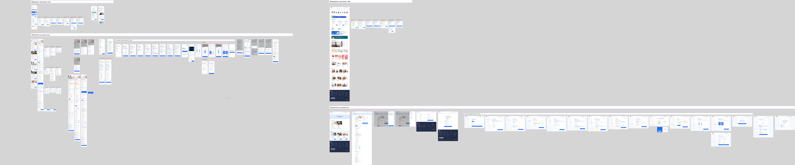
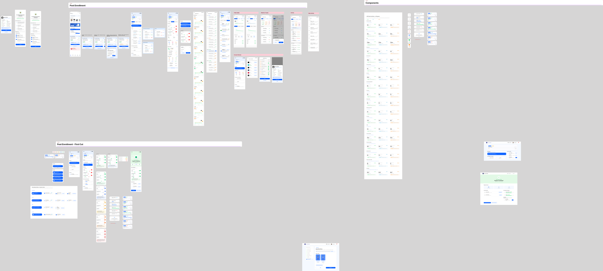

Define the nouns
Separate Program, Plan, condition, track, services, add-ons, entitlements and active care states.
A mobile-first Care Management Program experience that helps members choose the right care track, complete onboarding and enter a personalised active programme.
Lead product designer - product architecture and member journey
Members, covered family members and care teams
Balance member choice, commercial conversion and clinical safety across a branching journey

Care Management Program 2026
Product architecture, journey design, interaction design, prototyping and cross-functional alignment
2026 - Pre- and post-enrolment
Mobile-first member experience
Confidential
Care Management Programs combine wellness coaching, clinical care, diagnostics, devices and long-term behaviour change. Members need to understand what they are buying, select the right level of care and complete a multi-step onboarding journey before meaningful care can begin.
The design challenge was to create one understandable experience across discovery, customisation, consent, payment, onboarding and programme activation - while preventing higher-risk or medicated members from entering a track without clinical oversight.
I led the member-facing experience from product architecture through detailed interaction design. I translated programme definitions, clinical gates, commercial choices and operational handoffs into a journey that could be designed and built incrementally.
Separate Program, Plan, condition, track, services, add-ons, entitlements and active care states.
Design discovery, enrolment and onboarding as one continuous journey with resumable branches.
Turn medication and severity rules into hard interaction constraints rather than advisory copy.
Open enrolment with coach, dietitian and AI support. No medication management, clinical guarantee, baseline-lab gate or clinical interpretation of logged biometrics.
Eligibility-gated care with physician oversight, baseline labs, medication coordination, protocol checkpoints and an outcome target.
Members can choose their track when it is safe to do so. Foundation remains a separate wellness access tier rather than a clinical programme.
A member on qualifying medication, taking multiple relevant medicines or seeking a GLP-1 treatment cannot select Lifestyle for that condition. The option is disabled; the experience routes them to Clinical.
Acute readings trigger emergency routing regardless of track. In Lifestyle, biometrics remain neutral self-reference; the service cannot interpret them clinically or coordinate medication.
The pre-enrolment Figma system covers programme discovery, catalogue and detail, track selection, live plan customisation, consent, family-member enrolment, payment, HRA, body scan, tracker activation, baseline labs, eligibility outcomes and Plan Active.

HRA and body scan are profiling tools, not eligibility gates. Keeping those concepts separate prevents a wellness score from being mistaken for a clinical decision.
The selected Phase 1 journey takes payment before the Clinical eligibility lab. This aligned with the designed launch path, but it creates late-stage ineligibility and refund complexity. The experience therefore makes the outcome explicit and gives the member control over what happens next.
An eligibility-first alternative remains the stronger long-term model. I would revisit sequencing if instrumentation shows meaningful late-stage ineligibility, refund exposure or onboarding abandonment.
Activation is not the end of the experience. The post-enrolment design gives members a programme home, care-team access, priority trackers, progress views, medication and activity logging, daily actions, consultations and programme milestones.

The commercial timeline starts after enrolment and welcome. It controls term, billing and graduation and pauses only when the programme is formally paused.
Tasks, medication decisions and personalisation unlock only after baseline labs are resulted and verified. A member may be on Day 9 while the protocol is still waiting.
The interface must show both truths rather than hiding a delayed clinical start or presenting the programme as inactive.
Lifestyle is locked and Clinical is required.
Request a missing or stale marker without creating a dead end.
Offer retry and manual measurement paths.
Keep the Clinical plan held while clearly showing status.
Preserve selections and support retry or resume.
Disable duplicate purchase and route to the active programme.
The available PRDs define events rather than verified post-launch results. I would evaluate whether members understand the track difference, complete enrolment safely and reach active care without hidden eligibility or privacy surprises.
The most important design contribution was not producing more screens; it was giving the programme a coherent model. Once condition, track, eligibility, profiling, baseline and active care were separated, the team could make safer decisions, divide implementation into independent parts and communicate the programme honestly to members.
The work defines a continuous member experience across programme discovery, safe track selection, onboarding and active care. The available PRDs specify instrumentation and acceptance criteria; post-launch results were not included.
Track comprehension, safety-gate accuracy, onboarding completion, eligibility-related drop-off, refund or switch recovery, time to Plan Active and engagement after activation.